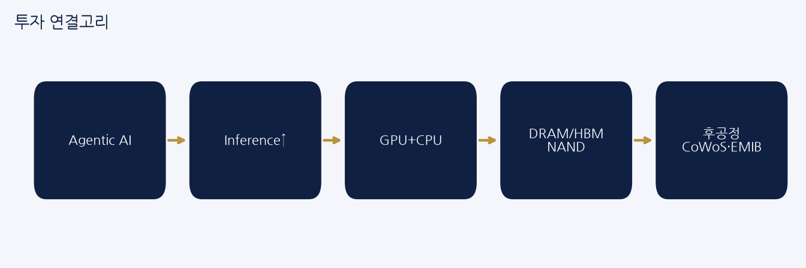
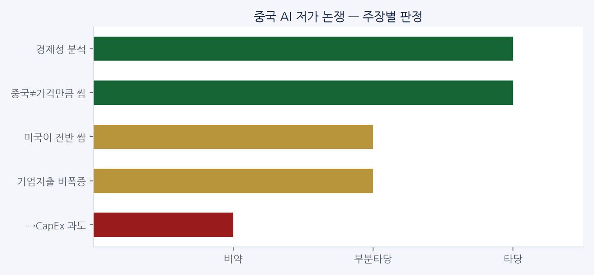
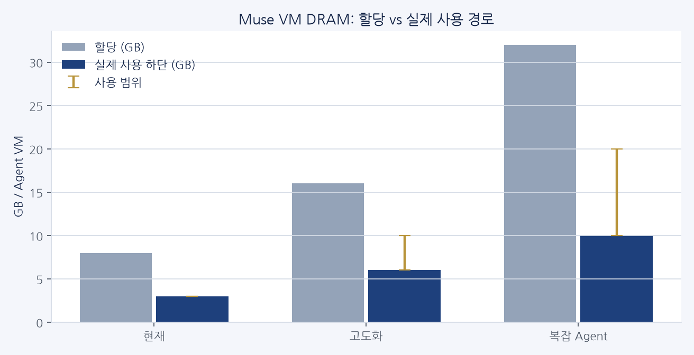
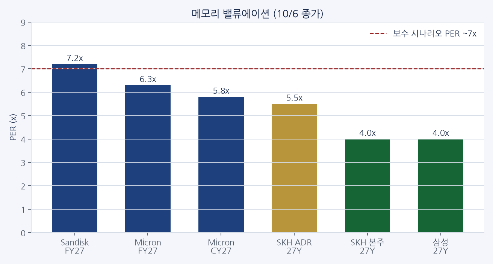
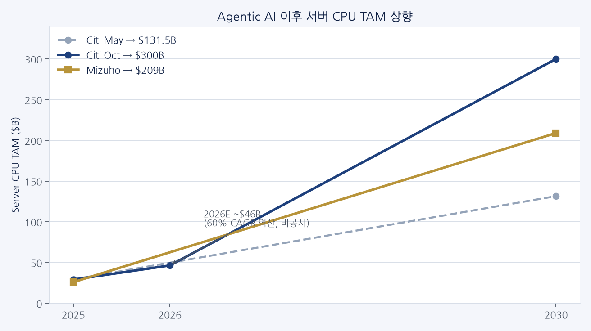

2026. 10. 7. · Quick 코멘트 + 첨부 PDF 6개 통합
10월 7일 Quick 코멘트 — Agentic AI가 CPU·메모리·후공정까지
매수·매도 권유가 아닙니다. 원문: 첨부 PDF 6개 + paste Quick 코멘트. HTML: reports/2026-10-07-quick-comment-brief.html
오늘 한 줄
토큰 단가 하락을 CapEx 둔화로 읽으면 안 된다. Agentic AI는 GPU뿐 아니라 CPU·DRAM·NAND·후공정(CoWoS·EMIB)으로 수요를 확산시키고, 메모리 밸류는 여전히 한 자리수 PER대다.
씨티 2030 CPU
$300B
2025 $29B → Agentic 상향
미즈호 2030 CPU
$209B
Agentic CPU 비중 30%

Agentic AI → Inference → GPU+CPU → DRAM/HBM/NAND → 후공정(CoWoS·EMIB)
1. 중국 AI는 정말 싼가
경제성은 토큰당 가격이 아니라 작업 완료 총비용(TCO)으로 본다.
- 중국 AI의 ‘저가’는 토큰 가격 기준일 뿐, 작업 완료 비용에서는 미국 AI가 더 저렴할 수 있다.
- 토큰 사용량은 폭증해도 기업 AI 지출은 오히려 감소 → 토큰 효율·가격경쟁력이 빠르게 개선.
- 사용량 ↑ ≠ CapEx·기업비용 폭증. ‘더 많은 AI 사용 → 더 낮은 단위비용’ 구조 가능.
| 주장 | 판정 |
|---|
| 기사의 경제성 분석 | 타당 |
| 중국 AI가 가격만큼 싸지는 않다 | 타당 |
| 미국 AI가 전반적으로 더 싸다 | 부분타당 |
| 기업 AI 지출이 폭증하지 않는다 | 부분타당 |
| 그러므로 AI CapEx가 과도하다 | 비약 |

비약 경계단위비용 하락 ≠ 인프라 수요 둔화. Agentic AI 사용량 폭증이 상쇄할 가능성이 크다.
2. MUSE에서 메모리는
Muse Secure VM = 사용자별 상시 컴퓨터. 1차 수혜는 서버 DRAM, 2차는 CXL/SSD·NAND.
VM
CPU + ~8GB RAM + SSD — 실행 컴퓨터
수요식
동시 활성 Agent 수 × Agent당 실제 평균 DRAM
| 단계 | 할당 / 사용 |
|---|
| 현재 | 8GB 할당 / ~3GB 사용 |
| 고도화 | 16GB 할당 / 6~10GB 사용 |
| 복잡 Agent | 32GB+ 할당 / 10~20GB+ 사용 |

- 8GB는 모델 적재 RAM이 아니라 Agent가 일할 때 쓰는 시스템 RAM이다.
- 논리적 할당(8GB) ≠ 물리 DRAM 점유. 오버커밋·공유로 실제는 더 작을 수 있다.
- 관측: VM 표시 ~7.7~8GB, 실제 사용 ~3GB. OpenAI dots 환경은 ~9.73GB도 관측.
- CPU는 idle 시 거의 0 → oversubscribe 용이. DRAM은 working state 유지 → 공유 어렵다.
- 백그라운드 상시 작업 → 평균 utilization·메모리 점유시간↑ → SSD/NAND도 동반 증가.
DRAM 업사이드현재는 실제 ~3GB×동시활성. 고도화되면 3→8→16GB로 올라가는 것이 추가 옵션.
3. 메모리 주가·밸류 (10/6 종가)
기준: 2026-10-06 종가. 수급 이슈와 할인율 이슈를 같이 봅니다.
| 종목 | 가격 | 기준 | PER | 메모 |
|---|
| Sandisk | $1,660.46 | FY27 EPS $230 | 7.2x | |
| Micron | $1,045.56 | FY27 EPS $165 | 6.3x | CY27 EPS $180 → 5.8x |
| SK하이닉스 ADR | $182.56 (=244.6만원) | 26Y / 27Y | 7.0x / 5.5x | MU 대비 −5% (과거 −20~−50%) |
| SK하이닉스 본주 | 178.4만원 | 26Y / 27Y | 5.1x / 4.0x | ADR 대비 본주 −37% 프리미엄 역산 |
| 삼성전자 | 27.3만원 | 26Y / 27Y | 5.7x / 4.0x | |

환율원화 강세 5~10% ≈ 삼전닉스 6~12% 하락 요인. 증권사 1480원 → 1370원 가정 시 컨센 ~10% 하향 여지.
할인·ADR삼전닉스 vs Micron 할인 ~−31%(환율 조정 여지). 과거 −20~−50%의 중간.
ADR 본주 대비 +37% → 프리미엄 30%면 본주 202만, 20%면 219만.
27년 이익: SK하이닉스 OP 392조 / EPS 444K (+40%+ OP / +27% EPS) · 삼성전자 OP 555조 / EPS 67.9K (+42% EPS)
보수 시나리오26년 실적 대비 28년 성장 0 가정 + PER ~7x → 하이닉스 209~244만 / 삼성 28.7~33.5만. 27~28년 이익 증가가 확인되면 그 이상을 점진 반영.
4. AMD · 씨티 · 미즈호 — CPU 시장 상향
Agentic AI는 Chatbot과 달리 지속 orchestration·tool call → GPU만이 아니라 CPU·메모리까지.
- Chatbot: 질문→답변→대기. Agent: 목표→검색/판단→실행→재실행 (수시간~24h).
- 기존 CPU:GPU ≈ 1:4~8 → Agent에선 1:1 또는 CPU가 더 많을 수 있음 (AMD 설명).
- 연구: 특정 workload에서 CPU tool processing이 latency의 최대 90.6%.
씨티
- 5월: 서버 CPU TAM 2025 $29.3B → 2030 $131.5B (CAGR ~35%)
- 10/6: 2030 $300B로 대폭 상향 (출발점 2025 $29B 유지)
- 60% CAGR 역산 시 2026E ~$46B (Citi 직접 발표 아님)
- Agentic CPU CAGR 185% (5월 모델)
- Muse 산식: Meta Muse 1억 DAU → Blackwell급 GPU 20~39만 → NVL72 2,800~5,500랙 → NV 일회성 $70~190억
미즈호
- 2030 TAM $209B
- 서버 CPU의 4% → 30%
- DRAM·NAND 출하 비트의 22~30%
- Nvidia Vera · AMD Venice가 차세대 CPU 경쟁 변수
| 항목 | 씨티 | 미즈호 |
|---|
| 2030 서버 CPU TAM | 씨티 $300B | 미즈호 $209B |
| Agentic CPU | 씨티 기존 $59.4B(45%)→증가 | 미즈호 $80B(30%) |
| 2025 출발 | $29B / $25.9B급 | 고성장 공통 |

$300B는 공격적방향성(GPU → CPU → DRAM/HBM → NAND → 서버)이 투자 포인트. 절대 숫자 맹신은 금물.
5. 피에스케이홀딩스 — CoWoS·EMIB 교집합
AI 반도체가 커질수록 CoWoS·HBM·OSAT·EMIB 후공정 CAPEX↑ → PSK는 그 교집합.
한화 TP한화 TP 27만원 (기존 타사 대비 한 단계↑). 핵심은 이익전망이 더 높다는 점.
| 축 | 장비 포인트 |
|---|
| CoWoS / HBM | Reflow 주력 |
| OSAT | Descum 주력 |
| Intel EMIB | Reflow + Descum 모두 공급 가능 → 레벨업 옵션 |
패키지 대면적화·공급망 다변화로 EMIB가 CoWoS 대안으로 부상. Intel New Mexico·Penang CAPA 확대.
운용수치가 뒷받침되면 차익실현 서두를 필요↓. 신규는 눌림목 분할, 안전마진 ~30%면 더 긍정. 손절은 칼같이.
6. 중간선거 — 전력 수급·affordability
미 중간선거 — 전력 수급 안정·비용 부담이 본질
- 상원은 공화당 구조적 유리 but 초박빙 → 민주당 하원 또는 상·하원 장악 가능성 배제 어려움.
- AI DC 전력수요가 ‘반(反)데이터센터’ 논쟁을 촉발해도, 정치권 해법은 DC 억제가 아니라 공급 확대·가격 안정.
- 공화: 원전·가스터빈·ESS·가스망. 민주: 신재생·원전 + affordability. 접점 확대.
- 민주가 최소 하원 확보 → IRA 전면 복원보다 신재생 보조금·세액공제 일부 연장/수정 가능성↑.
- 선거 후에도 원전·가스·ESS·신재생 다변화 투자는 지속 → 전력 밸류체인 중장기 모멘텀.
7. 당일 Quick 코멘트 보강
Micron 대만 노조 — 파업 ‘승인’ 단계타오위안 노조 99% 찬성으로 파업권 확보. 영업이익 15% 분기 성과급(상시 이익공유) 요구. 지금은 파업돌입이 아니다. ①승인(심리 부담) → ②일정 확정(공급 우려) → ③생산 중단(가격 압력).
DA Davidson MU TP $3,000$2,100→$3,000(+43%). 당시주가 $1,018 기준 +195% 여력. FY27 EPS의 ~19배. 컨센 TP 평균 ~$1,572(분포 $1,200~$2,200). 19배 배수에는 동의 어려움 → 컨센에 안전마진 20~30% 적용한 $1,200~$1,371을 Approach 기준으로.
Google DC — 핀란드 중단 vs 미국 전력 확보핀란드 Muhos·Kajaani는 환경영향평가 전 공사로 일시 중단(수요 부족 아님). 같은 날 Constellation과 3.59GW 계약(원전 uprate 890MW, 투자 $4.3B+).
Google × Unity — AI 게임 제작 사다리Playground → Unity Spark → 전문 Unity 개발. 관건은 AI로 늘어난 크리에이터가 Unity 전문 환경으로 이동하는지.
메모리 Bear vs BullBear: 실적이 좋은 게 아니라 가격이 너무 오른 것 → 가격상승률 둔화 시 마진·EPS 꺾임. Bull: AI가 구조적으로 수요 확대 → 가격상승률 둔화해도 2027~28 공급부족 지속.
8. 체크리스트
- 토큰 단가↓를 CapEx 피크로 연결하지 말 것 (Agent 사용량 상쇄).
- Agent DRAM은 8GB×N이 아니라 실제 평균 사용량×동시 활성 N.
- 메모리 PER 한 자리수 — 할인율·환율·ADR 프리미엄을 같이 볼 것.
- CPU TAM $300B는 공격적 시나리오. 방향성(GPU→CPU→DRAM/NAND)이 투자 포인트.
- PSK: CoWoS/HBM + EMIB 옵션. 이익 추정치가 TP 정당화 여부.
- 중간선거: 반-DC가 아니라 전력 공급·affordability 프레임.
- Micron 노조는 아직 파업 승인. 일정 확정 전 과잉 해석 주의.
원문
- PDF — 중국 AI가 정말 싸고, 미국 AI 지출은 과도한가
- PDF — MUSE에서 메모리는
- PDF — memory 주가·밸류 (10월 6일 종가)
- PDF — AMD·씨티·미즈호 TP / CPU 시장 상향
- PDF — 피에스케이홀딩스 · AI 반도체·CoWoS
- PDF — 중간선거 영향분석
- Paste — Quick 코멘트 로그 (Micron 파업승인, MU TP, Google DC, Unity 등)